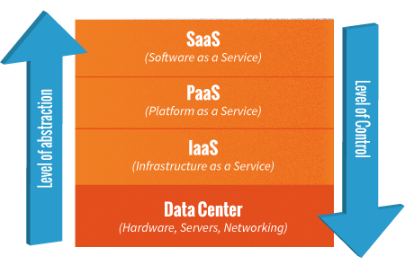
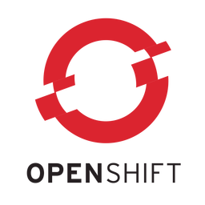
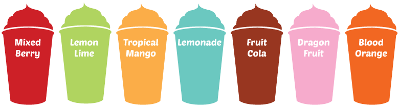

Introduction to
by Dieter Hubau and Maarten Fuchs
Cloud and PaaS Competence Center
© 2016 JWorks
Why are we here
Introduce the concept of PaaS
Explain why we need more PaaS adoption
Discover Cloud Foundry
Highlight the Cloud Foundry Architecture
What is Platform as a service
A cloud computing service offering
Allows you to manage and run applications
Without worrying about infrastructure
Where does a paas live
Infrastructure as a service
resources are distributed as a service
allows for dynamic scaling
variable cost pricing (like utilities)
usually multiple users on single piece of hardware
Amazon Web Services

Windows Azure
OpenStack

VMWare
Google Compute Engine

Platform as a service
this is why you are here...
Software As A Service
network access to, and mgmt of commercially available software
managed from central locations and available remotely via the web
single instance, multi-tenant architecture
centralized feature updating
CRM SAAS

Productivity SAAS

Email SAAS
Email SAAS

Chat SAAS
Source Control SAAS
Compared to IaaS and SaaS
| vs | PAAS | |
|---|---|---|
| IAAS | More Abstraction | Less Control |
| SAAS | Less Abstraction | More Control |
Which services should a paas offer
What are the criteria for evaluating Paas providers?

"The 10 Layers Of PaaS"
5 layers of Paas Infrastructure
Virtual resources - IaaS is a key building block
High availability - data backup and disaster recovery
Scalability - increases in load and site traffic
Maintenance & optimization - tuning of web and database layer
Monitoring - catch performance degradation or security threats
5 layers of Paas App Development
Continuous delivery - separate environments, test automation, quality assurance
Application maintenance - software and security updates
Integration with third-party tools - web services, databases, etc.
Application and infrastructure support services
Support for different development languages
Why do we need paas

What are the business drivers ?
Business Drivers for Paas
Innovation
Time To Market
Cost Reduction
Paas Facilitates Innovation
It's a tool which enables Enterprise DevOps
High level of standardization and automation
Cost of mistakes is reduced
Experimentation becomes a possibility
Paas Decreases Time To Market
Keeps the developer focus on the applications
Streamlines IT Operations and speeds up processes
With faster release cycles as a result
Paas Brings Cost Reduction
Elasticity of servers, storage and network bandwidth
Software maintenance is handled by the platform
So IT Operations can avoid daily routine tasks
Some Examples of Paas
But that's not why we're here tonight...
Introducing
What is Cloud Foundry?
Industry standard platform for cloud applications
Open Source platform for application lifecycle automation
Fastest growing open source company in the world
Provides build, test, deploy and scaling capabilities
Works with any* languages or framework
Cloud Foundry Foundation
Includes major sponsors
EMC (Pivotal and VMWare)
HP
IBM
Intel
SAP
Swisscom
...
Flavours of Cloud Foundry
Open Source Software
Vendored Distribution
Private Service
Public Service
Open Source Software
Available on Github as cf-release
Requires knowledge of Bosh
Vendored Distribution
Private Service

Public Service

Key Benefits of Cloud Foundry
Application Portability
Application auto-scaling
Centralized platform administration
Centralized logging
Dynamic Routing
Application Health Management
Integration with Elasticsearch and Logstash
Role-based access for deployed applications
Provision for horizontal and vertical scaling
Infrastructure security
Support for various IaaS providers
Cloud Foundry subsystems
Bosh creates and deploys VMs on any IaaS
Cloud Controller manages application lifecycles on those VMs
(Go)Router routes incoming traffic to the correct VMs
Cloud Foundry Architecture

Deploying to Cloud Foundry can be very simple
$ cf login -a api.run.pivotal.io
$ git clone https://github.com/cloudfoundry-samples/sample_app
$ cd sample_app/
$ cf create-service postgresql turtle rails-postgres
$ cf push
Live Demo of Pivotal Web Services
What's Next
15th of February: CloudFoundry for Devs
TBD: Cloud Foundry for Ops
More Information
THANK YOU !

Cloud and PaaS Competence Center
© 2016 JWorks